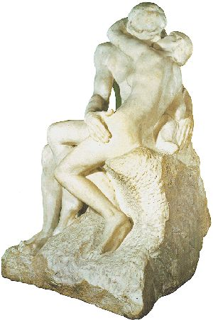
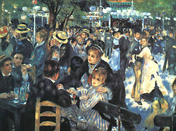

(franc.), igy nevezik a modern festészet egyik iskoláját, mely a régi hagyományokkal szakítva, azoktól merőben eltérő fölfogást állított föl a valóság festészeti utánzásának elvéül. Az I. iskola a valóságnak anyagi mivoltát, s a vele benső kapcsolatban levő formákat ha nem is mellőzi egészen, aminthogy nem is mellőzheti, de mellékesnek tekinti; fölfogása szerint a természet anyagi mivolt, az élő lények, a növényi világ és holt tárgyak csak alkalmul, ürügyül szolgálnak, hogy a fesőt szineiken megfigyelje és visszaadja a fény és a levegő pillanatnyi jelenségeit. Ez iskola fölfogássa szerint tehát a valóság festészeti utánzásának fő elemei: a szin, a fény és a levegő. A három közül a szin sem önmagáért érdekli az I. festőt, hanem csak azért, mert értékével kifejezi a fény erejének, a levegő tisztaságának fokát. Önként értetik, hogy az ilyen festő tárgyait nem zárt helyiségben keresi, hanem a szabad ég alatt, ahol legtöbb a fény. Manet Eduárd francia festő volt első hirdetője az uj elvnek; 1862. lépett föl először, két festménye, melet 1865. a párisi Salon biráló bizottsága visszavetett, általános gúny tárgya volt. E viszontagságok azonban nem ingatták meg, erős meggyőződéstől vezetve tovább dolgozott, végre kivivta elvének elismertetését és Delacroix, Courbet. Corot mellett a negyedik megalapítójává lett a modern francia festészetnek, amelynek emlőin táplálkozik az összes művelt népek festészete. Manet közvetlen tanítványai és követői voltak: Degas, Renoir, Pissaro, Gisley, Monet, Ganguin, Zandomeneghi. Ma az I. festők száma beláthatatlan. Az irodalomban Zola Emil volt Manet védelmezője, s tőle kölcsönözte az elveket, melyeket «L'Oeuvre'» cimü regényének hőse Claude Lantier hirdet.
Az impresszionizmus világképe és korszakolása
Az irodalmi impresszionizmus jellemzése

Francois-Auguste-René Rodin (1840-1917) : A csók. 1886.; Rodin Múzeum, Párizs
Az impresszionizmus, hasonlóan a szimbolizmushoz, nem elsősorban az eszközhasználat sajátosságaihoz kötődik, hanem egy új létélményhez. A pozitivizmus és a természettudományok fejlődésére támaszkodva (fénytan, optika, időfogalom; fényképezés, diaporáma, később a film; az orvostudomány szemmel kapcsolatos eredményei stb.) azt a hitet keltették az emberekben, hogy a valóság jelenségei azonosak annak lényegével, s ez a valóság az új tudományos eredmények segítségével megragadható a pillanatban. A pillanat, a hangulat megragadására pedig minden - illúziót is felhasználó - eszköz felhasználható: a siker igazolja az alkotás létjogosultságát. Természetesen a sejtelmesség, a sugallat itt is nagy szerepet kap, de más cél érdekében. Az impresszionista alkotást elsősorban létfelfogása különbözteti meg a szimbolistától. Az impresszionista művész is lázad a konvenciók ellen, elveti az előítéleteket, le akarja vetkőzni a gátlásokat (utóbbihoz akár ajzó- és stimuláló szereket is használ), de elsősorban azért, mert ezek a megszokások teszik lehetetlenné, hogy megmutassa: az új világlátás mennyivel jobb. Olyannak és olyanként akarja láttatni a világot, amilyennek az megnyilvánul, de ahogyan a hagyományhoz ragaszkodó nem képes látni.
Renoir, Pierre-Auguste (1841-1919) : The Ball at the Moulin de la Galette. 1876., olaj ; Musée d'Orsay in Paris
Nem hisznek örök és állandó normában, állandó kísérletezés költészetük a pillanat megragadása érdekében. Egyik jellemző lélekállapotuk a dekadencia, amely a szecessziós életérzéssel az alapja lesz a fine de siecle-hangulatnak. A művésznek mindent szabad, a művésznek mindent ki is kell próbálnia. Kozmopoliták és "ragadozók": semmi sem szent számukra. Az impresszionizmus fedezi fel újra a távol-keleti és az ősi kultúrákat, hozza divatba az európai irodalomban ismeretlen formákat, nyelveket, műalkotásokat. Miközben elvet mindent szabályt, fontosnak tartja, hogy a valóság megragadásához minden eszközt kipróbáljon. A szép és a rút kategóriáit szintén használja, de számára a rút élménye nem az elmélyüléshez vezet, hanem a karikírozáshoz. Szerepjátékaiban borzong, de a szerepet nem veszi komolyan: azonnal vált. Egyik legpontosabb megfogalmazása nézeteiknek a Költészettan, P. Verlaine verse, amelyet egyesek - tévesen - szimbolista alkotásnak tartanak.Degas, Edgar (1834-1917): Rehearsal on the Stage, 1878-79.
Fontos jellemvonás még az ún. összképzetegység. A felidézett hangulat szintézis is egyben, azaz mindennek ezt az egységet (és ezt a hangulatot) kell szolgálnia. A többnyire nominális szerkezet egy vezérszóval kezdődik, amelynek jelentését a részletezés (és hangulatfinomítás) taglalja. De vigyázzunk, az impresszionista művész nem "rendezi" ezt az összképet, hanem hagyja megszületni. A zeneiséget a ritmuson kívül a hanghalmozással, illetve a hangszimbolikával érik el.